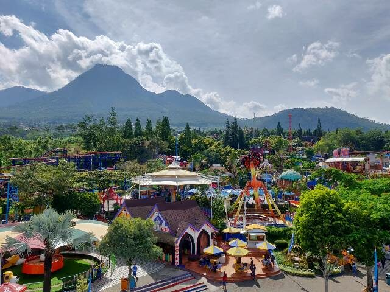
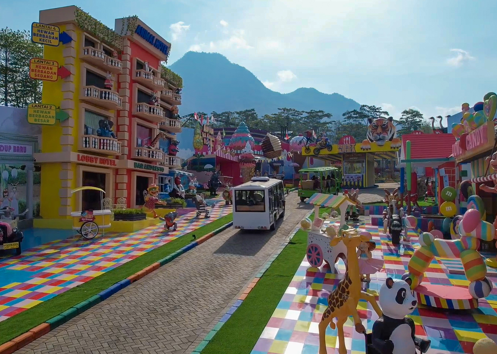
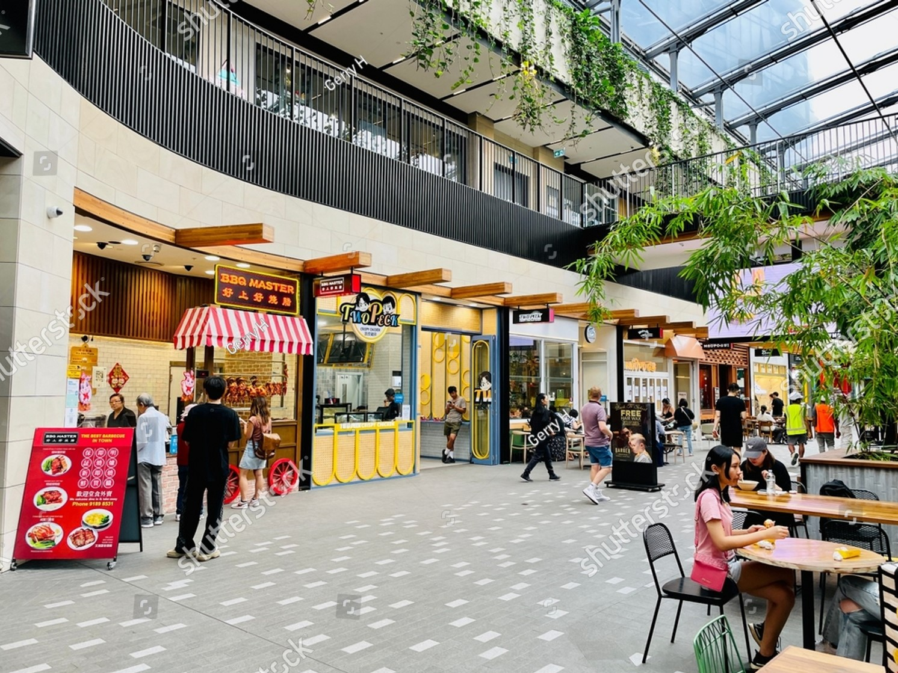
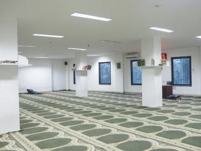
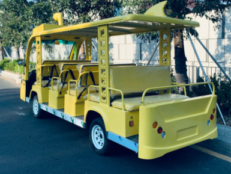
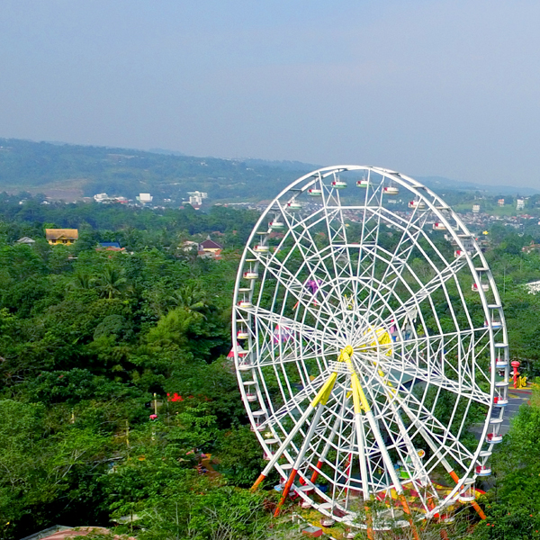
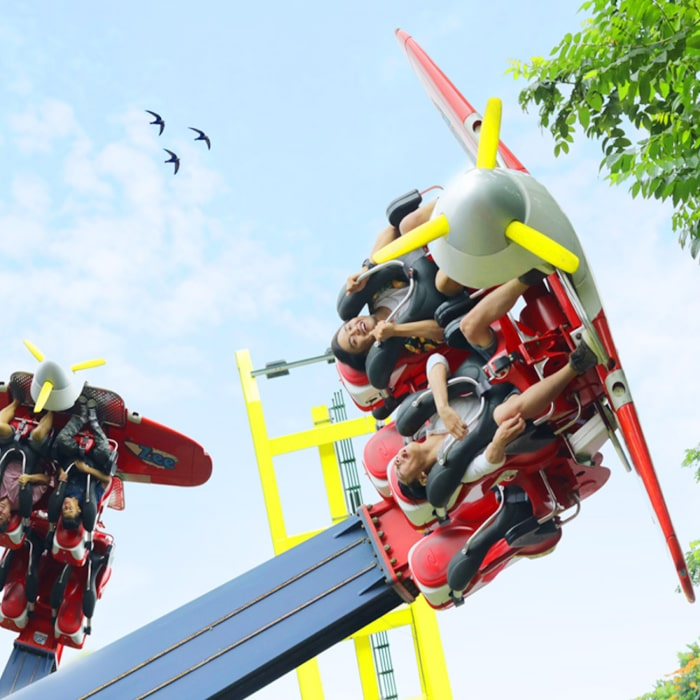
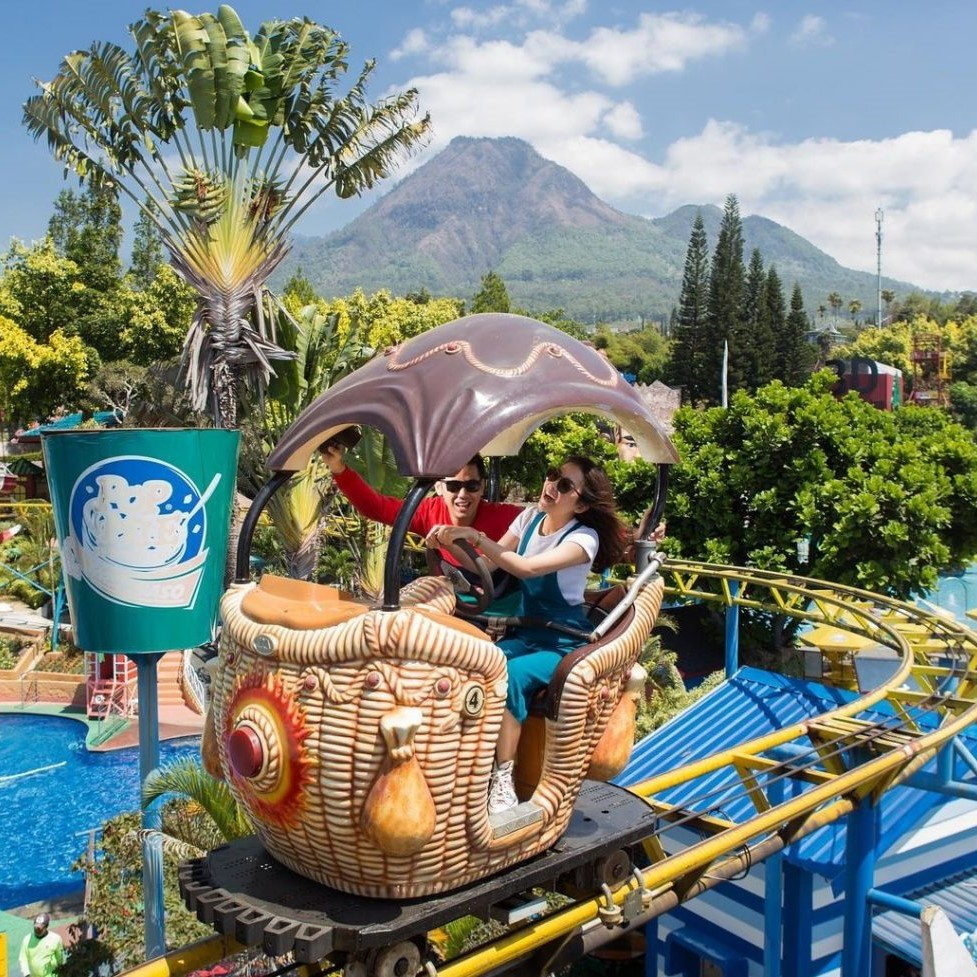

⠀
Fantasi Park Overview



fantasi park
destinasi wisata bermain anda
Fantasi Park merupakan destinasi hiburan unik yang menggabungkan keajaiban dunia fantasi dengan kegembiraan permainan. Fantasi Park menawarkan beragam wahana bermain yang spektakuler, pengetahuan hingga hiburan dan dapat menjadi salah satu tujuan wisata anda. Nikmati kegembiraan bersama keluarga dan teman-teman Anda di Fantasi Park, di mana kebahagiaan dan petualangan tak terbatas!
Fasilitas


Mushola

Bus
⠀
Wahana

Ferish Whell
Ferish Whell
Bayangkan melihat pemandangan pegunungan dan indahnya suasana alam Fantasi Park dari ketinggian 45m. Ini dia wahana wajib buat Sahabat yang berpetualang ke Fantasi Park. Nikmati hawa pegunungan yang sejuk bersama keluarga dari Kincir Raksasa tertinggi ke-2 di Indonesia

Air Race
Air Race
Pengen tau gimana rasanya berada di dalam pesawat jet dan bertempur di udara. Rasakan sensasi berada dalam pesawat jet tempur di wahana Air Race ini

Save Swinger
Ayo seru-seruan berputar di kursi ayun Wave Swinger. Setelah naik pastikan Kamu berfoto di depan wahananya ya, keren banget buat jadi spot foto.

Sky Ride
Sky Ride
Wahana Sky Ride mengantarmu menikmati pemandangan yang ada di sekitar Fantasi Park. Kamu dapat melihat pemandangan alam di sekitar seperti Pegunungan

360
Di 360° kamu bisa merasakan bagaimana rasanya diputar-putar hingga 360°. Bahkan, Selain diputar-putar kamu dapat juga dibawa sampai ke ketiggian lho jadi pasti lebih menegangkan sekaligus asyik.

Tornado
Berputar seperti tornado dengan durasi yang membuat kamu puas berdebar-debar. Flying Tornado merupakan wahana menantang yang wajib dicoba. Dari ketinggian, kamu akan merasakan berputar dengan formasi yang berbeda di setiap detiknya.

Coaster
Kereta berpenumpang 4 orang akan membawamu pada arah yang acak dikecepatan tinggi, setiap tikungan akan membuatmu merasa terdorong kedepan hingga adrenalin memuncak, tanjakan dan turunan semakin melengkapi sensasi menegangkan saat meluncur dengan wahana satu ini.

Perahu Air
Bayangin gimana rasanya naik di atas sebatang kayu menyusuri sungai-sungai dan jatuh dari air terjun. Ini dia wahana seru yang rugi banget kalau sampai dilewatin. Kamu akan ngerasain jatuh dari air terjun, bahkan bukan hanya sekali terjun loh

Snipper
Wahana terbaru di jawa timur park ini merupakan wahana bermain keluarga yang sangat memacu adrenalin para pengunjung Fantasi Park, para pengunjung akan merasakan sensasi meluncur terbang keudara seperti berada di pusaran angin tornado pada kecepatan maksimal 50 KM/ jam dengan sudut kemiringan hingga 80 derajat selama kurang lebih 3 menit.
⠀